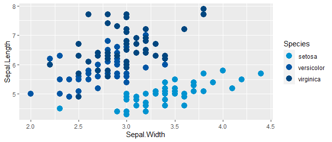

an R color palette for ggplot2 using NOAA Fisheries branding colors

This implements these steps to create a ggplot2 compatible palette according to NOAA Fisheries branding.
Installation
To install from Github use the following:
remotes::install_github("nmfs-general-modeling-tools/nmfspalette")
#>
#> checking for file 'C:\Users\chris\AppData\Local\Temp\Rtmp2jo5AZ\remotes29944d194e4d\nmfs-general-modeling-tools-nmfspalette-5292ce1/DESCRIPTION' ... v checking for file 'C:\Users\chris\AppData\Local\Temp\Rtmp2jo5AZ\remotes29944d194e4d\nmfs-general-modeling-tools-nmfspalette-5292ce1/DESCRIPTION'
#> - preparing 'nmfspalette': (359ms)
#> checking DESCRIPTION meta-information ... checking DESCRIPTION meta-information ... v checking DESCRIPTION meta-information
#> - checking for LF line-endings in source and make files and shell scripts
#> - checking for empty or unneeded directories
#> - building 'nmfspalette_0.0.0.9000.tar.gz'
#>
#>
library(nmfspalette)Usage
Extract an interpolated color palette from the default “oceans” palette. You can change the number of colors (10 shown below).
nmfspalette::nmfs_palette("oceans")(10)
#> [1] "#0093D0" "#0085C6" "#0077BC" "#0069B2" "#005BA8" "#00539F" "#005097"
#> [8] "#004C8F" "#004987" "#00467F"Palettes
To see the palettes, use the display_nmfs_palette() function.


Examples
In addition to nmfs_palette and display_nmfs_palette to get in-built palettes, you can extract colors by name. Please see the NOAA Fisheries Branding guide for color names, all spaces are replaced with underscores in the color names.
nmfspalette::nmfs_cols("processblue")
#> processblue
#> "#0093D0"To use the palettes with ggplot2, the scale_color_nmfs() and scale_fill_nmfs() functions are provided. If no argument is given to scale_color_nmfs(), a default (“oceans”) is used:
p <- ggplot(iris, aes(Sepal.Width, Sepal.Length, color = Species)) +
geom_point(size = 4) +
scale_color_nmfs()
p
scale_fill_nmfs does not have a default and therefore requires a named argument for now, this is an example using the “crustacean” palette
ggplot(faithfuld, aes(waiting, eruptions)) +
geom_raster(aes(fill = density)) +
scale_fill_nmfs(palette="crustacean", discrete=FALSE, reverse=TRUE)
Disclaimer
“The United States Department of Commerce (DOC) GitHub project code is provided on an ‘as is’ basis and the user assumes responsibility for its use. DOC has relinquished control of the information and no longer has responsibility to protect the integrity, confidentiality, or availability of the information. Any claims against the Department of Commerce stemming from the use of its GitHub project will be governed by all applicable Federal law. Any reference to specific commercial products, processes, or services by service mark, trademark, manufacturer, or otherwise, does not constitute or imply their endorsement, recommendation or favoring by the Department of Commerce. The Department of Commerce seal and logo, or the seal and logo of a DOC bureau, shall not be used in any manner to imply endorsement of any commercial product or activity by DOC or the United States Government.”
- This project code is made available through GitHub but is managed by NOAA at https://vlab.ncep.noaa.gov/redmine/projects/integrated-fisheries-toolbox/files